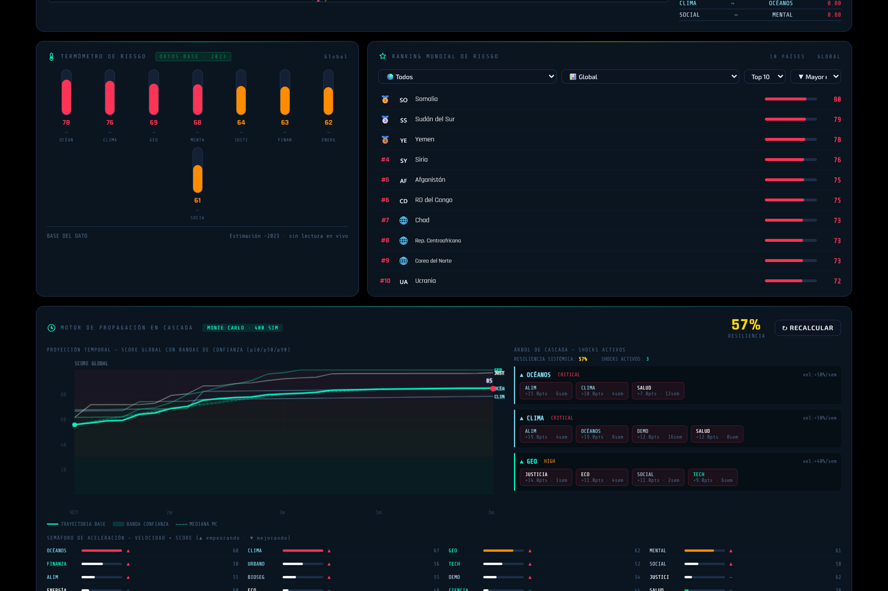

AETHER es un sistema de inteligencia de riesgos globales que corre completamente en local, sin servidor, sin base de datos, sin dependencias de backend. Un único archivo HTML con todo el motor analítico embebido — e instalable como PWA en cualquier dispositivo móvil con soporte offline completo.
El algoritmo de cinco capas combina scores base calibrados con 15+ organismos internacionales, vectores de velocidad por categoría, una matriz de correlación 16×16, propagación de shocks en cascada con lag y decaimiento configurables, y 400 simulaciones Monte Carlo que generan bandas de confianza p10/p50/p90. Cada shock se propaga generando impactos de segundo y tercer orden. El Shock Simulator permite introducir perturbaciones manuales o usar 8 escenarios predefinidos — Pandemia, Recesión Global, Guerra Regional, Colapso Climático y más.
La visualización es dual: mapa coroplético clásico D3.js y globo 3D interactivo Three.js con 92 arcos geopolíticos en 5 tipos — alianzas, tensiones, flujos comerciales, rutas energéticas y migraciones masivas. Completamente responsivo con soporte táctil, con puente en tiempo real entre ambas vistas. Las Señales de Alerta monitorizan 64 fuentes oficiales — OMS, FAO, ACLED, GDELT, SIPRI, NOAA, IMF — ponderadas dinámicamente por el score activo de cada categoría.
La IA no es un chatbot genérico. Es Mistral corriendo en tu máquina, con contexto completo de la región activa, generando predicciones estructuradas, escenarios Optimista/Base/Pesimista y análisis sin enviar datos a ningún servidor externo. Once módulos interactivos, 201 países, 16 dimensiones de riesgo.
ollama pull mistral
OLLAMA_ORIGINS="*" ni OLLAMA_HOST=0.0.0.0: el primero deja que cualquier web que visites hable con tu Ollama desde tu navegador, y el segundo lo expone a toda tu red local, en ambos casos sin autenticación.# Windows PowerShell $env:OLLAMA_ORIGINS="https://franjuanp.github.io,http://localhost:8080"; ollama serve
# Linux / macOS OLLAMA_ORIGINS="https://franjuanp.github.io,http://localhost:8080" ollama serve
cd /carpeta/con/AETHER python -m http.server 8080
http://localhost:8080/AETHER_v1.html